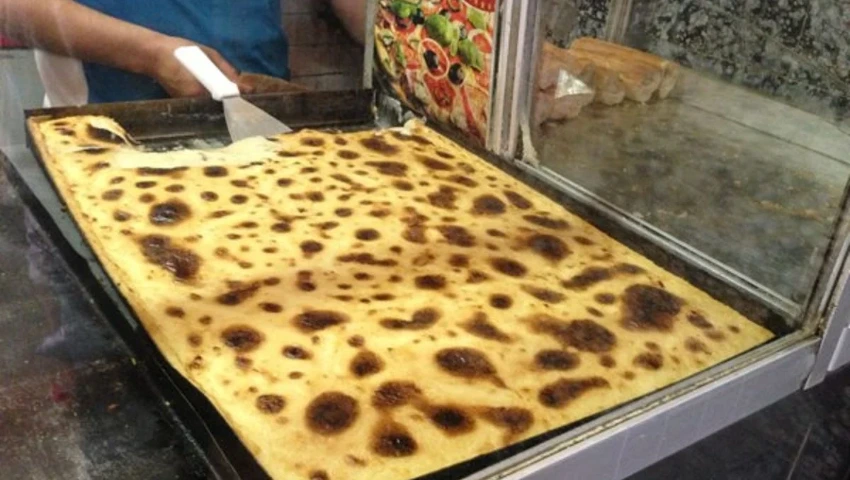

karantika

Description
Karantika (also known as Garantita, Karantita, Calentica, or Karan) is a beloved Algerian street food with roots in Spanish colonial influence (the name comes from the Spanish word "caliente," meaning "hot").
Ingredients
- 250 g (about 2 cups) chickpea flour
- 750 ml – 1 liter (3–4 cups) water
- 100–150 ml (about ½ cup) olive oil or neutral vegetable oil
- 1–2 eggs
- 1–2 tsp salt
- 1–2 tsp ground cumin (plus extra for serving)
- ½ tsp black pepper (optional)
Steps
- In a large mixing bowl, add the chickpea flour, salt, cumin, and pepper. Whisk to combine the dry ingredients.
Gradually pour in the water (and milk if using) while whisking constantly to avoid lumps. The batter should be smooth and quite liquid (like a thin pancake batter).
Add the oil and the beaten egg(s). Whisk vigorously until everything is well incorporated and no lumps remain. (A hand blender or food processor works great for a super-smooth result.)
- Cover the bowl and let the batter rest for at least 30 minutes, or ideally 1–6 hours (or even overnight in the fridge).
This allows the chickpea flour to fully hydrate and improves the final texture.
- Preheat your oven to 200–220°C (390–430°F).
Use a fairly hot oven so the top gets nicely golden.
- Generously grease a round or rectangular baking dish (about 20–25 cm / 8–10 inches) with oil or butter.
Some people line it with parchment paper for easier removal.
-
Pour the rested batter into the greased dish (it should be about 2–3 cm / 1 inch thick).
Place it in the hot oven and bake for 35–50 minutes, depending on your oven and the thickness. The top should turn a beautiful golden-brown with some darker spots, while the inside remains soft and set (it will jiggle slightly like a flan when shaken).
If the top isn’t browning enough, you can switch to the broiler/grill for the last 2–3 minutes.
-
Remove from the oven and let it cool for 10–15 minutes (it firms up as it cools but is best served warm).
Cut into squares or wedges.
Serve hot in sliced baguette with a generous sprinkle of cumin and a bit of harissa on the side (or spread inside the bread). Add any extra toppings you like.
Main Page